This guide covers the work a hardware store does in CIMS: selling at the counter, keeping the stockroom straight, and knowing where the shop stands.
It is written for whoever is doing the job, not for whoever built the system. Every screen in it was photographed from a running shop, and every message in the troubleshooting page was produced by actually causing the problem.
| Page | What it covers |
|---|---|
| Getting started | Signing in, finding your way round, and the one thing to set up first |
| Page | What it covers |
|---|---|
| Open the till | Starting the day: the drawer, the float, and why selling needs one |
| Ring up a sale | Finding products, building a basket, taking cash or GCash |
| Hold a basket | Parking a customer's order and picking it up again |
| Cancel a sale | Voiding something rung up by mistake, and what it puts back |
| Close the till | Counting the drawer, the Z-reading, and what a shortfall means |
| Page | What it covers |
|---|---|
| Order stock | Raising a purchase order on a supplier |
| Approve an order | The sign-off that has to happen before goods can be booked in |
| Book in a delivery | Receiving goods, including a short or damaged delivery |
| Close a short order | Stopping the wait for a balance that is never coming |
| Move stock to the branch | Transferring goods between Main and Branch |
| Write off damage | Taking spoiled or stolen stock off the shelf |
| Count the shelf | A stock count, and posting what you actually found |
| Page | What it covers |
|---|---|
| What to reorder | What has run out and roughly what it costs to restock |
| What the stock is worth | Value on hand, by branch |
| The day's takings | Sales, drawer counts and shortfalls |
| Add a product | Putting a new line in the catalogue, priced correctly for VAT |
| Add a staff account | Giving someone their own sign-in |
| Page | What it covers |
|---|---|
| When something goes wrong | Every message you can see, what it means, what to do |
| Glossary | The few words on screen that are not obvious |
Separate logins for cashiers and stockmen. The shop currently has one account, with the Owner role. CIMS can restrict what each person sees, but those roles have not been set up, so everyone signs in as the owner and can reach everything. Add a staff account explains how to create accounts; deciding who should be restricted to what is a decision for the shop.
Printing to a receipt printer. The receipt appears on screen and the Print button opens your browser's print window. No thermal printer was attached when this guide was written, so the printed slip is not shown here.
Selling on Shopee or Lazada. The marketplace screen exists and is described nowhere in this guide, because connecting it needs seller accounts the shop does not have yet.
Everything in CIMS happens after you sign in. This page covers signing in, finding your way around, and the one thing to check before anyone sells anything.
Open your browser and go to the shop's CIMS address. On the counter PC this is usually already saved as the home page.
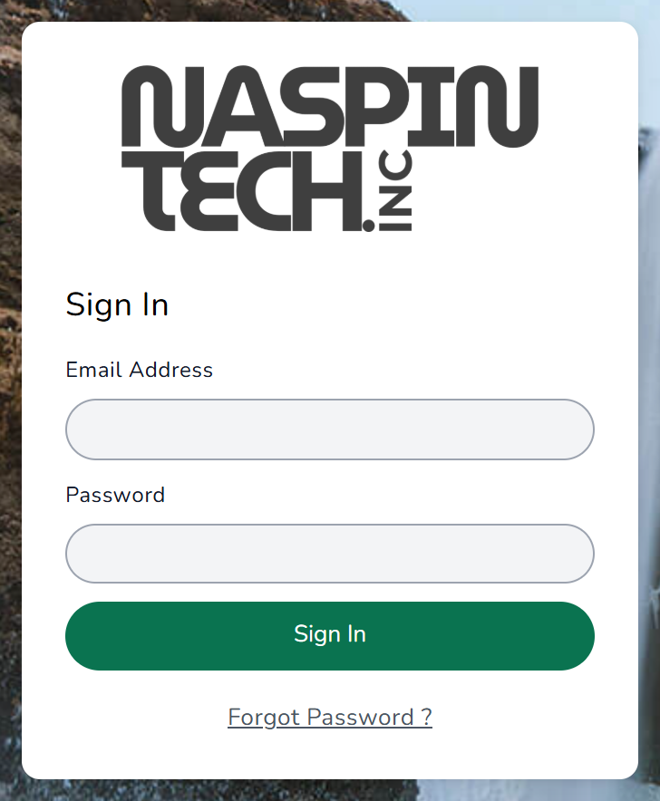
Type your email in Email Address and your password in Password.
Press Sign In. The Dashboard opens. If it does not, see When something goes wrong.
The same two boxes, stacked, are what a phone shows:
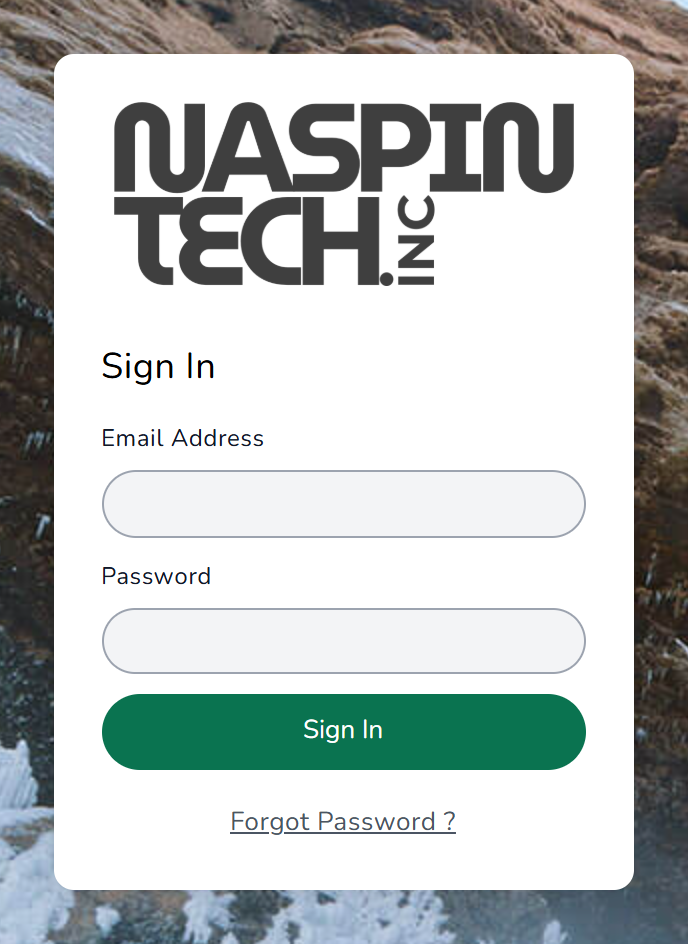
There is a Forgot Password ? link under the button. It emails you a reset link — but the shop's email settings have never been filled in, so no mail can go out. Press it and, after as much as half a minute, the screen turns red: The reset email could not be sent. Check the SMTP settings under Settings, then System Settings. Nothing was sent and nothing is coming.
Until those settings are filled in, ask whoever looks after the shop's accounts to set you a new password instead. See Add a staff account.
Nobody can see the shop's figures without signing in, so never leave the counter PC signed in and unattended.
The dark strip down the left is the menu. The entries you will use most are near the top.
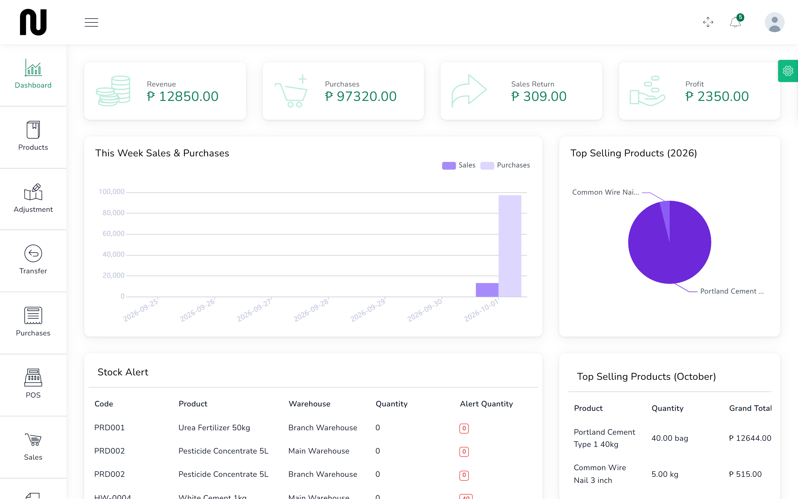
| Menu entry | What it is for |
|---|---|
| Dashboard | The day at a glance, plus a Stock Alert list of what is running out |
| Products | The catalogue: every item the shop sells |
| Adjustment | Taking stock off the shelf for damage or loss |
| Transfer | Moving stock between Main Warehouse and Branch Warehouse |
| Purchases | Ordering from suppliers |
| POS | The counter: ringing up sales |
| Sales | Every invoice the shop has issued |
Lower down the menu are Quotations, People (customers, suppliers and staff), Reports and Settings.
On a phone the menu is hidden. Press the three lines at the top left to open it.
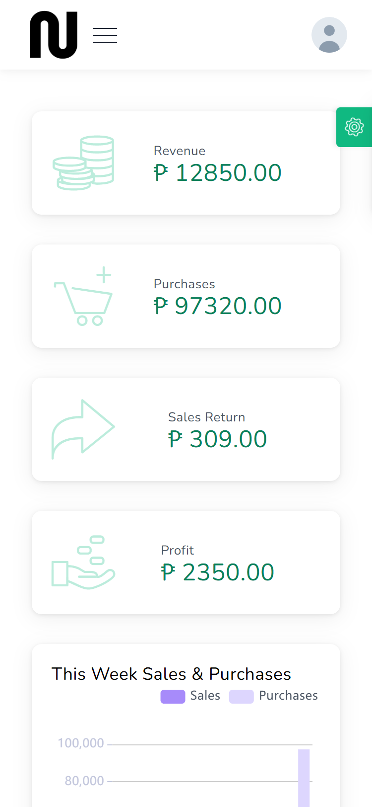
The shop has two places stock can sit: Main Warehouse and Branch Warehouse. Almost every screen asks which one you mean, and the answer changes what you see.
This matters more than it sounds. If the counter is set to the wrong warehouse, it will sell stock the shop does not have in front of it, and the branch will be short without anyone noticing until a count.
At the counter, the warehouse is the second box down on the POS screen. Set it once at the start of the day.
Right now the shop has a single sign-in with the Owner role, which can reach every screen, including the money and the settings.
If you want the counter staff to see only the till, that is possible — CIMS controls it per person — but the accounts have to be created first. See Add a staff account.
If you are on the counter, read Open the till next, then Ring up a sale.
If you are in the stockroom, start at Book in a delivery.
If you run the shop, What to reorder and The day's takings are the two you will open most.
At the start of the day you tell CIMS how much cash is in the drawer. From then on it keeps count, so that at closing time it can tell you what should be there. This takes about a minute.
Before you start: count the float — the cash you are starting the drawer with.
From the menu, choose POS. The counter screen opens. At the top left it says Till closed.
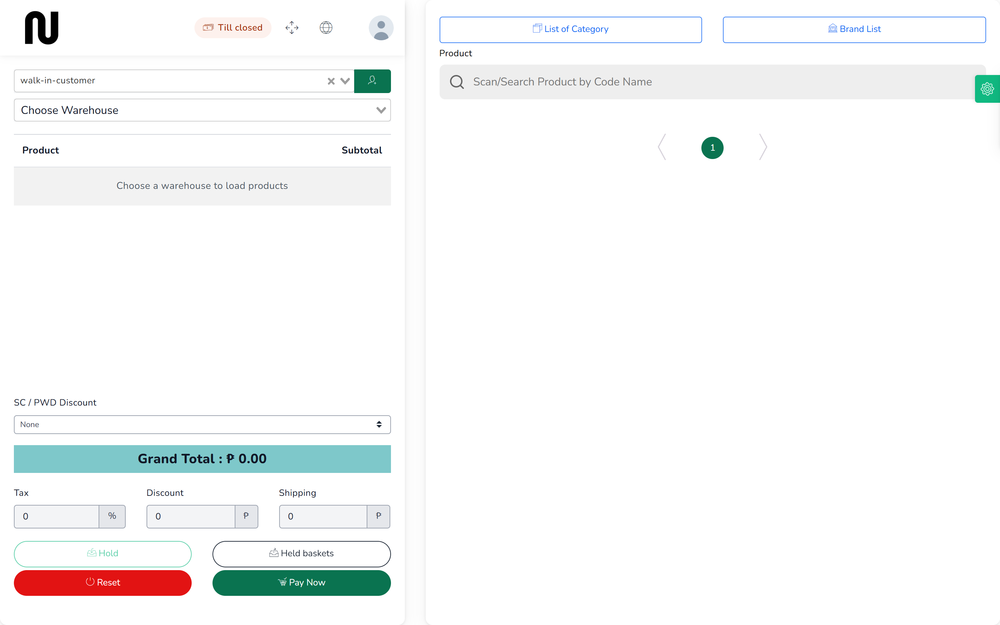
In the second box down, choose the warehouse you are selling from — normally Main Warehouse. The products appear on the right, each showing its code, price and how much is in stock. This takes a few seconds.
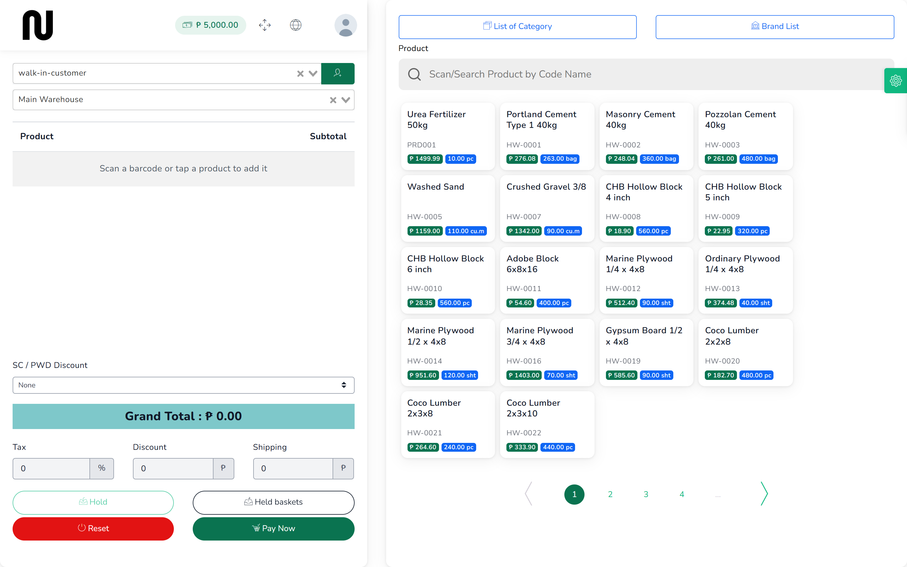
Press Till closed at the top left. A Till session box opens saying you have no drawer open at this warehouse.
Press Open till.
Leave Terminal as MAIN unless the shop has more than one counter. If it has two, give each one its own name so the drawers can be told apart.
Type the cash you counted into Opening float.
Press Open till. The label at the top left changes from Till closed to the amount in the drawer.
Once the drawer is open you can sell. See Ring up a sale.
CIMS now adds every cash sale to the drawer and takes off every cash refund. You can check the running figure at any time by pressing the amount at the top left.
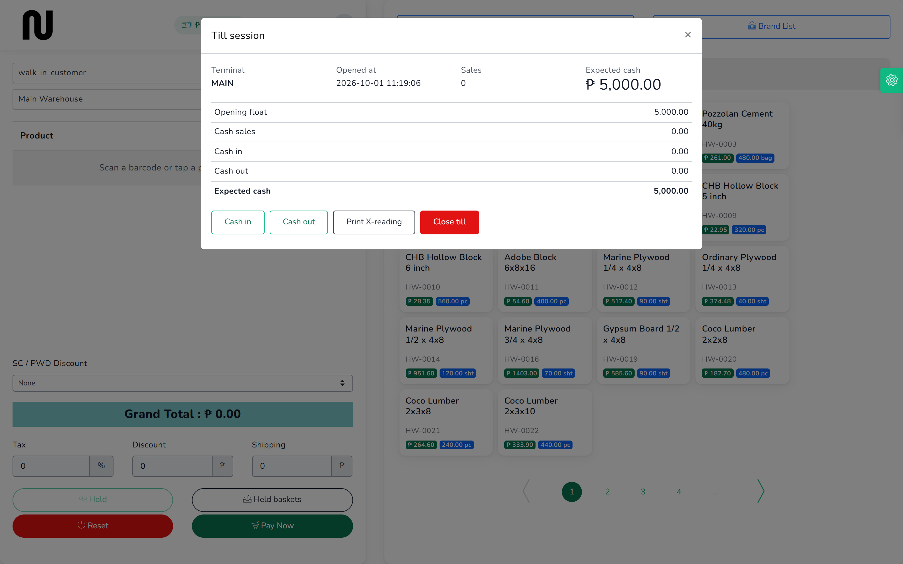
Cash in and Cash out are for money that moves without a sale — paying a delivery driver out of the drawer, or adding change from the safe. Use them, or the drawer will not balance at closing time.
Print X-reading shows where the shift stands without closing it. It is safe to press at any time and changes nothing.
| You see | It means | Do this |
|---|---|---|
| Choose Warehouse | you pressed before choosing a warehouse | choose the warehouse in the second box, then try again |
| This drawer already has a session open. Close it before opening another. | this terminal already has an open drawer | press the amount at the top left to see it; close it before opening a new one |
| Open the till before selling. No drawer is open for you at this warehouse. | you tried to sell with no drawer open | open the till as above |
One drawer belongs to one person at one terminal. If a colleague opened it, they have to close it — their name is on the shift.
A customer brings goods to the counter. You find each item, take the money, and hand them a receipt. Most sales take under a minute.
Before you start: the till has to be open. See Open the till.
From the menu, choose POS, and check the warehouse box reads the one you are selling from.
Find each item and press it to add it to the basket. You can scan the barcode, type the code or name into Scan/Search Product by Code Name, or press the item in the grid. List of Category and Brand List narrow the grid.
Set the quantity with − and +, or press the quantity box and type it. The line total and Grand Total update as you go.
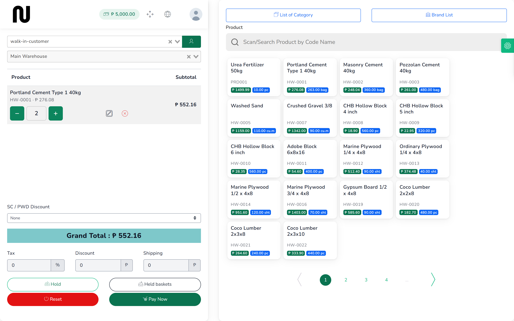
The price shown already includes VAT. What the customer pays is the price on the shelf.
If the customer is a senior citizen or a person with disability, choose the right entry in SC / PWD Discount and enter their ID when asked. The discount and the VAT exemption are worked out for you.
Press Pay Now. The Create Payment box opens with the amount already filled in.
Type what the customer handed you into Received Amount. Change shows what to give back.
Choose how they paid in Payment choice — Cash, GCash and the others the shop accepts.
If they are paying two ways — some cash, the rest by GCash — turn on Split the payment and enter each amount. The parts must add up to the total.
Press Submit. The receipt appears on screen with the invoice number at the bottom, and the drawer figure at the top left goes up by the cash taken.
Press Print to print the receipt, or close the box to carry on.
The counter screen is about one and a half screens tall on a phone, and everything is in one column instead of two. The order going down is: the customer, the warehouse, the basket, the totals, then Hold, Held baskets, Reset and Pay Now.
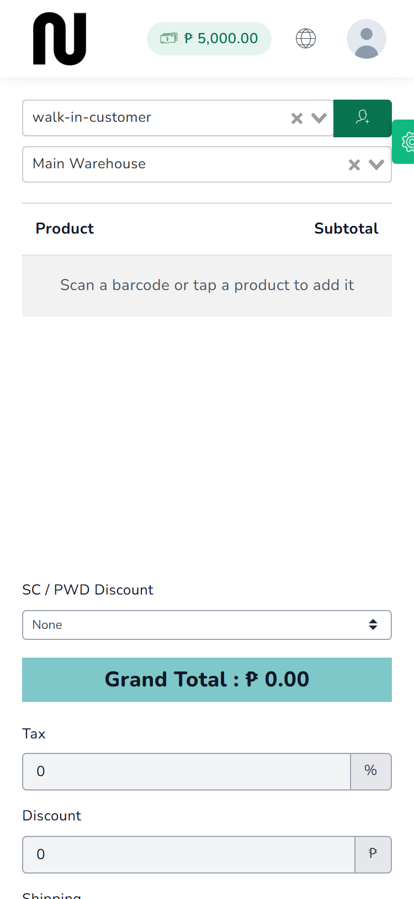
The products are below Pay Now, not above it. Scroll past the buttons to reach the search box and the product grid. This catches everyone the first time — the screen looks finished at Pay Now, so it does not look as though there is anything further down.
The drawer figure at the top shows Till closed in red when no drawer is open, and the float in green when one is.
The stock comes off the shelf straight away, so the next customer sees the reduced figure.
The invoice is on the Sales list, and the sale is counted in the drawer for whoever closes the till tonight.
The receipt shows VATable Sales, 12% VAT, VAT-Exempt Sales and Zero-Rated Sales separately. That split is what the BIR expects to see, and it is worked out from each product's own setting rather than typed in.
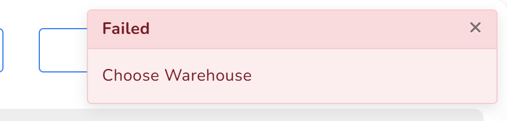
| You see | It means | Do this |
|---|---|---|
| Choose Warehouse | no warehouse is chosen | choose one in the second box down |
| Open the till before selling. No drawer is open for you at this warehouse. | no drawer is open | see Open the till |
| Insufficient stock for the selected product and warehouse. | this warehouse does not hold that many | check the stock figure on the item, or sell from the other warehouse |
| The amount paid cannot be more than the order total of {amount}. | the tendered amount is higher than the sale | enter what the customer owes; put the cash they handed over in Received Amount instead |
| This sale would take {customer} to {amount}, over their credit limit of {limit}. | a credit customer is over their limit | take a payment on their account first, or raise the limit on their customer record |
A customer has gone to fetch their truck, or wants to add more before paying. You park their basket, serve the next person, and pick it up again when they come back.
Before you start: the items must already be in the basket.
With the basket on screen, press Hold.
Give it a name the counter will recognise — the customer's name, or what they are waiting for. "Mr Cruz — waiting on truck" is more use than "Hold 1".
Press to confirm. The basket clears and you can serve the next customer.
Press Held baskets. Every parked basket is listed with its name and total.
Find the one you want and press to recall it. The items come back onto the counter screen exactly as they were.
Carry on as normal — see Ring up a sale from step 5.
Holding a basket does not reserve the stock. The items stay on the shelf and anyone can sell them. If a held basket sits too long and the stock goes, you will be told when you try to take payment.
A basket can only be recalled once. If two counters try to pick up the same one, the second is told it has already been taken — which is what stops the same order being rung up twice.
Held baskets belong to the warehouse they were created at. A basket held at Main does not appear at Branch.
| You see | It means | Do this |
|---|---|---|
| This field is required | the basket has no name | type a name and try again |
| nothing listed under Held baskets | nothing is held at this warehouse | check the warehouse box is the one you held it at |
| Insufficient stock for the selected product and warehouse. after recalling | the stock sold while the basket was parked | reduce the quantity, or sell from the other warehouse |
Something was rung up wrong and the customer is still at the counter. Voiding the sale puts the stock back, takes the money off the drawer, and leaves a record of what happened.
Before you start: voiding is for a mistake caught the same day, on the same shift. If the customer is bringing goods back later, that is a sale return instead — ask whoever runs the shop.
From the menu, choose Sales. Every invoice is listed, newest first.
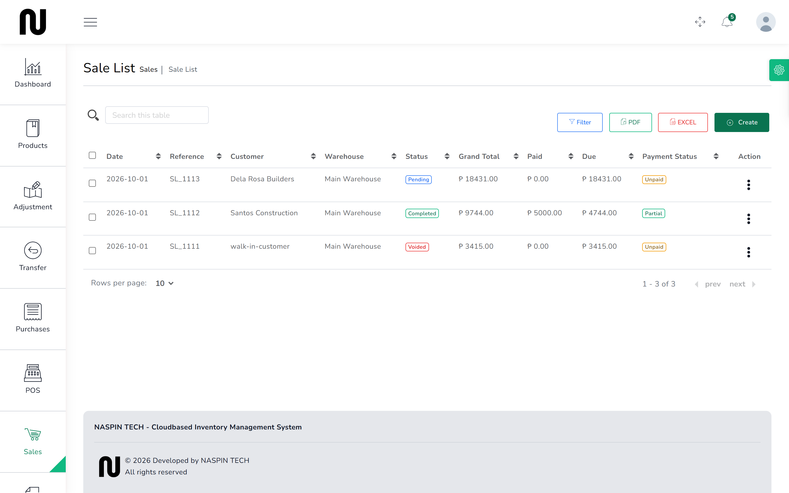
Find the invoice. The reference is on the receipt, and starts SL_.
Open it and choose to void it.
Type why. "Wrong item rung up" or "Customer changed their mind" is enough. The reason is kept with the invoice, so write something a person reading it next month will understand.
Confirm. The invoice stays on the list, now marked voided.
Three things happen together:
The invoice is not deleted and its number is not reused. That is deliberate: the BIR expects an unbroken run of invoice numbers, and a missing number looks worse than a voided one. The voided invoice still appears in the day's range on the Z-reading.
| You see | It means | Do this |
|---|---|---|
| That sale has already been voided. | somebody voided it already | check the status on the list; no further action is needed |
| That shift has already been counted down. Use a sale return instead. | the till was closed after the sale | the drawer is settled, so this has to go through as a return |
| That sale was not made today. Use a sale return instead. | the sale is from an earlier day | same — handle it as a return, not a void |
| Void reason is required | you left the reason blank | type why it is being voided |
If you cannot void it, that is usually correct rather than a fault: once the drawer is counted and closed, changing what was in it would make the count wrong after the fact.
At the end of the shift you count the drawer and tell CIMS what you found. It compares that with what it expected and records the difference. This takes a couple of minutes.
Before you start: count the cash in the drawer, including the float you started with.
From the menu, choose POS, and check the warehouse box reads the one you have been selling from.
Press the amount at the top left. The Till session box opens showing where the shift stands.
Read Expected cash. That is what should be in the drawer: the float, plus cash sales, plus anything added with Cash in, less anything taken with Cash out, less cash refunds.
Press Close till.
Type what you actually counted into Counted cash. The box works out the difference as you type and shows it beside Expected cash.
If there is a difference, say why in Notes. "₱50 short, no obvious cause" is a perfectly good note.
Press Close till. The label at the top left goes back to Till closed.
The shift is now a Z-reading — the end-of-day record. It holds the opening float, the cash counted, the difference, the number of sales, the first and last invoice numbers, the VAT split and any voids.
You cannot close the same shift twice, and you cannot reopen it. If you counted wrong, tell whoever runs the shop rather than trying to correct it yourself — the Z-reading is the record the books are built on.
To sell again, open a new drawer. See Open the till.
Past shifts are under Reports → Till Sessions. See The day's takings.
A difference is recorded, not hidden. Short means less cash than expected; over means more.
Both are worth looking at. The usual causes are change given wrong, a cash payment rung up as GCash, or money taken from the drawer without using Cash out.
A drawer that balances exactly every single day is worth a second look, not praise — it usually means somebody is typing the expected figure into Counted cash instead of counting.
| You see | It means | Do this |
|---|---|---|
| This field is required | Counted cash is blank | type what you counted, even if it is 0 |
| the figure will not accept a negative | a counted drawer cannot be less than nothing | count again; if the drawer is genuinely empty, enter 0 |
| That shift has already been counted down. | the drawer is already closed | check Reports → Till Sessions for the Z-reading |
You raise a purchase order so the supplier knows what to send and the shop has a record of what is coming. Ordering does not change your stock — nothing moves until the delivery arrives.
Before you start: the supplier must be on file. People → Suppliers lists them, and has a button to add one.
From the menu, choose Purchases, then Create Purchase.
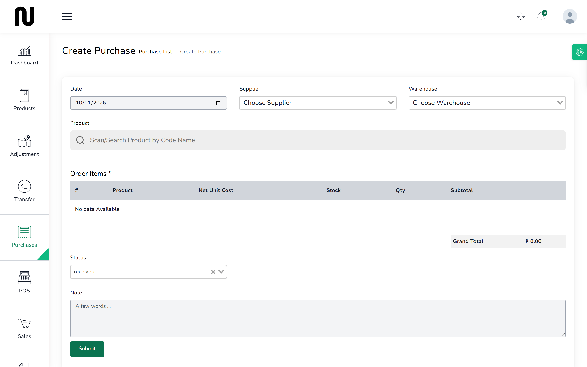
Set the Date, choose the Supplier, and choose the Warehouse the goods will be delivered to.
Find each product and add it, the same way as at the counter — scan, type the code or name, or pick it from the list.
For each line, enter the Quantity and the Unit Cost the supplier is charging you. This is the cost price, not the shelf price.
Leave the status as the one that means not yet received. Marking an order received before the goods arrive puts stock on the shelf that is still on the lorry.
Press Submit. The order appears on the Purchases list with a reference starting PR_.
Nothing reaches the shelf yet. That is correct — an order is not a delivery.
The order now needs approving before anything can be booked in against it. See Approve an order.
When the goods arrive, see Book in a delivery.
The Unit Cost matters more than it looks. When the goods are booked in, CIMS works out a new average cost for that product across everything you hold — what you paid before and what you have just paid, weighted by quantity.
That average is what every margin and every stock valuation is based on afterwards. Entering the shelf price here instead of what the supplier charged will quietly make the shop look unprofitable.
| You see | It means | Do this |
|---|---|---|
| This field is required | supplier, warehouse or a quantity is blank | fill the highlighted boxes |
| a product cannot be found | it is not in the catalogue, or has no record at that warehouse | see Add a product |
| the total looks wrong | CIMS recalculates the total itself from the quantities and costs | check each line's quantity and unit cost; the total follows them |
A purchase order has to be signed off before any goods can be booked in against it. This is the shop's check on what is being bought and at what price.
Before you start: the order must already be raised. See Order stock.
From the menu, choose Purchases, then Approvals. Every order waiting for sign-off is listed.
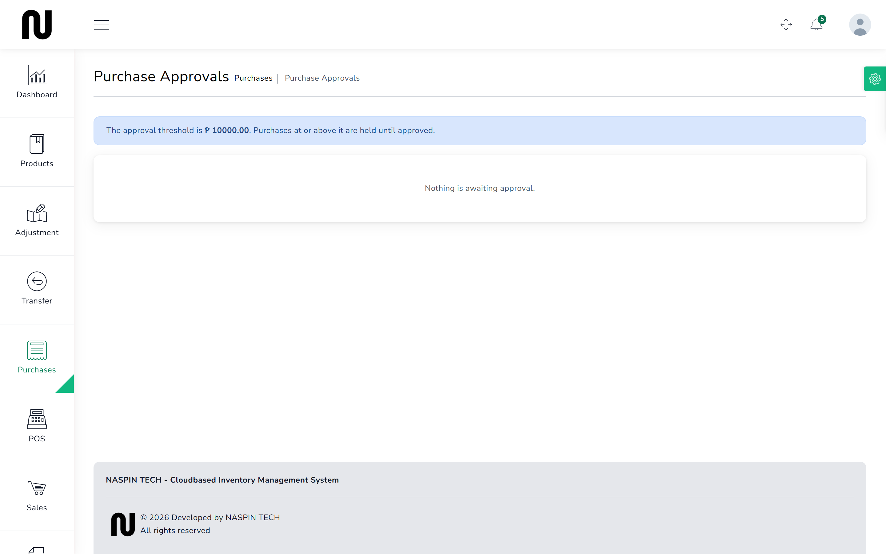
Check the order: the supplier, the quantities, and the unit costs. This is the moment to catch a price that has gone up without anyone agreeing it.
Approve it, or reject it with a reason.
The order moves off the approvals list. CIMS records who approved it and when.
The stockroom can now book in deliveries against this order. See Book in a delivery.
Until an order is approved, trying to receive against it is refused outright and no stock moves. That is the control working, not a fault.
A rejected order cannot be received against at all.
| You see | It means | Do this |
|---|---|---|
| This purchase is awaiting approval and cannot be received yet. | somebody tried to book in a delivery first | approve the order here, then book the delivery in |
| This purchase was rejected and cannot be received. | the order was turned down | raise a new order if the goods are genuinely wanted |
| This purchase is not awaiting approval (it is {status}). | it has already been approved or rejected | no action needed; check the status on the Purchases list |
| the approvals list is empty | nothing is waiting | that is normal — orders only appear here between being raised and being signed off |
The lorry arrives. You check what came off it against the order, book in what is good, and reject what is damaged. Only what you book in reaches the shelf.
Before you start: the order must be raised and approved. See Approve an order.
From the menu, choose Goods Receipts, then Create Goods Receipt.
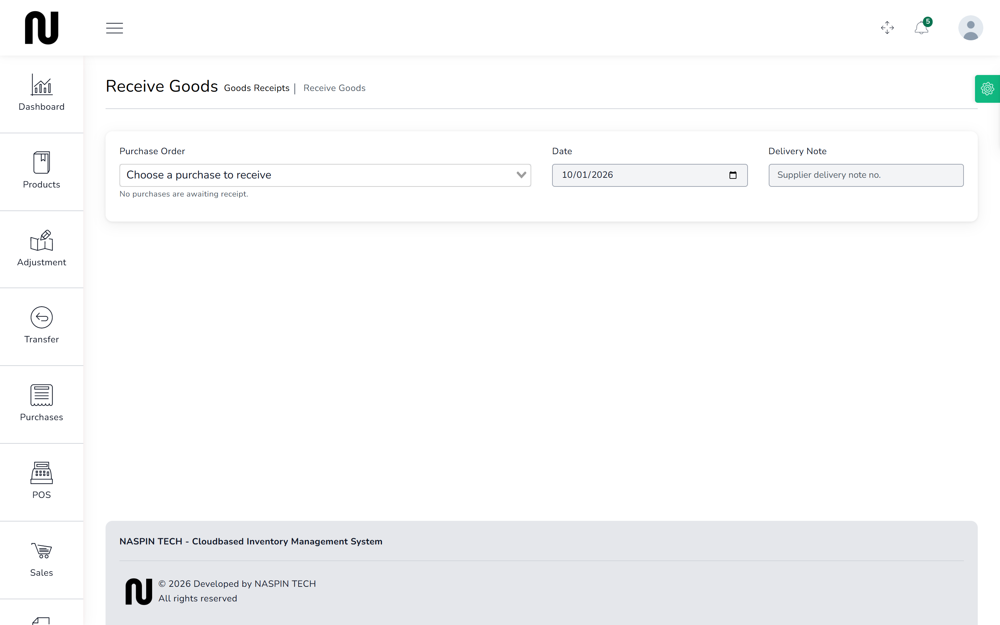
Choose the order you are receiving against. Only approved orders with something still outstanding appear. The lines fill in with what is still due.
Set the Date and, if the driver gave you one, type the delivery note number into Delivery note.
For each line, enter how many arrived in good condition.
If anything is damaged, put that number in the rejected column rather than reducing the received figure. Rejected goods do not reach the shelf. The difference is the point: the order still shows what was ordered, the receipt shows what was accepted, and the gap is visible.
Add a note about anything worth remembering. "Five bags torn, returned on the truck" takes five seconds and settles an argument a month later.
Press Submit. The receipt gets a reference starting GRN_.
The accepted goods are on the shelf immediately, and the cost is recalculated.
If you bought at a different price from last time, the average cost of that product moves — see Order stock for why that matters.
The order stays open until everything ordered has been received. A part delivery is normal: book in what came, and book in the rest when it arrives.
If the rest is never coming — the supplier wrote it off, or discontinued the line — see Close a short order. Leaving it open means the shop keeps counting stock that will never arrive.
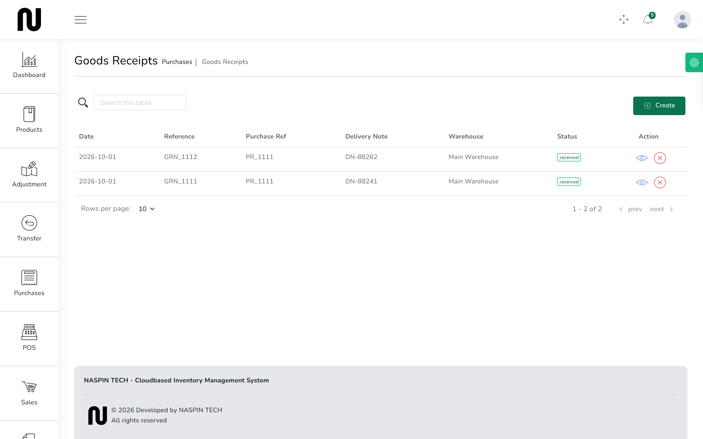
| You see | It means | Do this |
|---|---|---|
| This purchase is awaiting approval and cannot be received yet. | the order has not been signed off | see Approve an order |
| This purchase was rejected and cannot be received. | the order was turned down | raise a new order |
| This order was closed short on {date} ({reason}). Raise a new order for anything that still arrives. | somebody closed the order short and the goods turned up anyway | raise a new order for what arrived; do not reopen the closed one |
| the order is not in the list | it is fully received, rejected, or closed short | check its status on the Purchases list |
| you booked in too many | the receipt cannot exceed what was ordered | book in what actually arrived; if the supplier sent extra, raise a second order for it |
Part of an order is never going to arrive. The supplier wrote off the damaged bags, or discontinued the line, or simply stopped answering. Closing the order short stops the shop waiting for goods that are not coming.
Before you start: be sure the balance really is not coming. If it is merely late, leave the order open — a late delivery can still be booked in against an open order, but not against a closed one.
From the menu, choose Purchases.
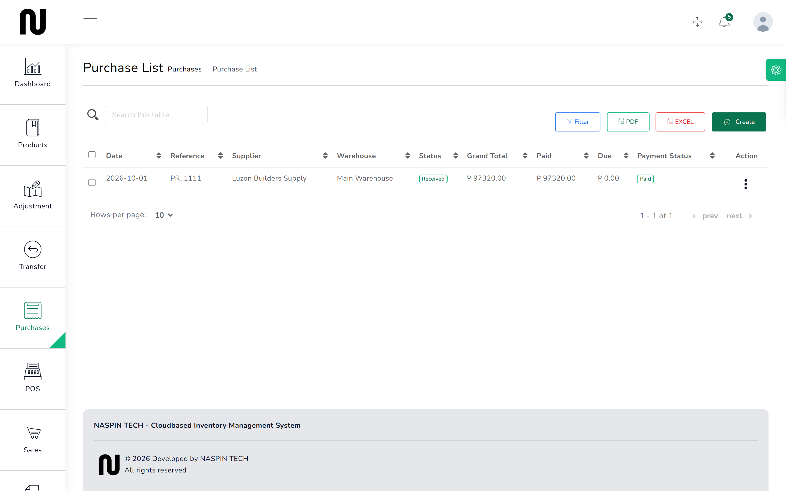
Find the order. It will still read as not fully received.
Close it short.
Type why. This is required, and it is the whole point of the record: "Five bags written off by the supplier, no reship" tells the next person what happened. "Closed" tells them nothing.
Confirm. The order drops off the list of deliveries still expected.
No stock moves and nothing is rewritten. If 195 of 200 bags arrived, the order still says 195 of 200 arrived, because that is what happened. What changes is that somebody has recorded, with a reason and their name, that the remaining five are not coming.
The order no longer appears when you go to book in a delivery, and it no longer counts toward goods on their way.
Once closed:
If the goods do turn up afterwards, raise a new order for them. That keeps the record honest: the first order was closed because the stock was not coming, and the second exists because it did.
| You see | It means | Do this |
|---|---|---|
| This field is required | you did not say why | type a reason; an order that vanished without one is worse than one left open |
| Everything on this order has been received, so there is nothing to close. | the order is already complete | no action needed |
| This order was already closed short on {date}. | somebody closed it already | check the Purchases list for its status and the reason recorded |
The branch has run out of cement and Main has plenty. A transfer takes stock off one warehouse and puts it on the other.
Before you start: check the sending warehouse actually holds what you are moving. The quantity shows beside each product as you add it.
From the menu, choose Transfer, then Create Transfer.
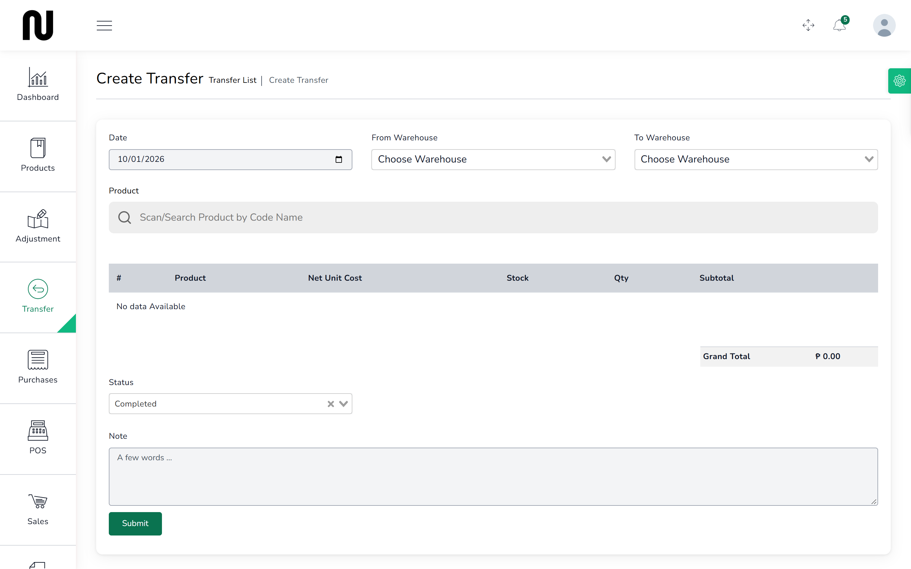
Set the Date.
Choose From Warehouse — where the stock is now.
Choose To Warehouse — where it is going. These must be different.
Find each product and add it. The stock figure shown is for the sending warehouse.
Enter the quantity for each line.
Set the status to the one meaning the goods have actually moved, not merely been planned.
Press Submit. The transfer appears on the list with a reference starting TR_.
The sending warehouse goes down and the receiving one goes up, by the same amount, at the same moment. The shop owns exactly as much as it did before — stock has moved, not changed.
Both halves are recorded against the same transfer reference, so a movement report shows the two sides as one event rather than an unexplained loss at one branch and an unexplained gain at the other.
You can move a product to a branch that has never stocked it. The branch simply starts holding it from that moment.
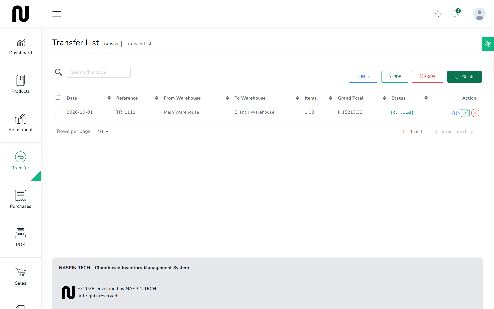
| You see | It means | Do this |
|---|---|---|
| This field is required | a warehouse or quantity is blank | fill the highlighted boxes |
| Insufficient stock for the selected product and warehouse. | the sending warehouse does not hold that many | reduce the quantity, or send from the other warehouse |
| the product shows 0 in stock | the sending warehouse has none | you cannot send what is not there; order it in instead |
| both warehouse boxes are the same | a transfer needs two different places | change one of them |
After a transfer, each branch's figures change. If somebody is part-way through a stock count at either branch, finish the count first — otherwise the count sheet was taken before the stock moved and the variance it reports will be the transfer, not a real discrepancy.
Cement has set in the bag, nails have rusted, a sheet of plywood was dropped. The stock is gone but nobody bought it, so it has to come off the shelf deliberately.
An adjustment can also add stock — found goods, or correcting an entry made wrong.
Before you start: if you are correcting a whole shelf rather than one item, a stock count is the better tool. See Count the shelf.
From the menu, choose Adjustment, then Create Adjustment.
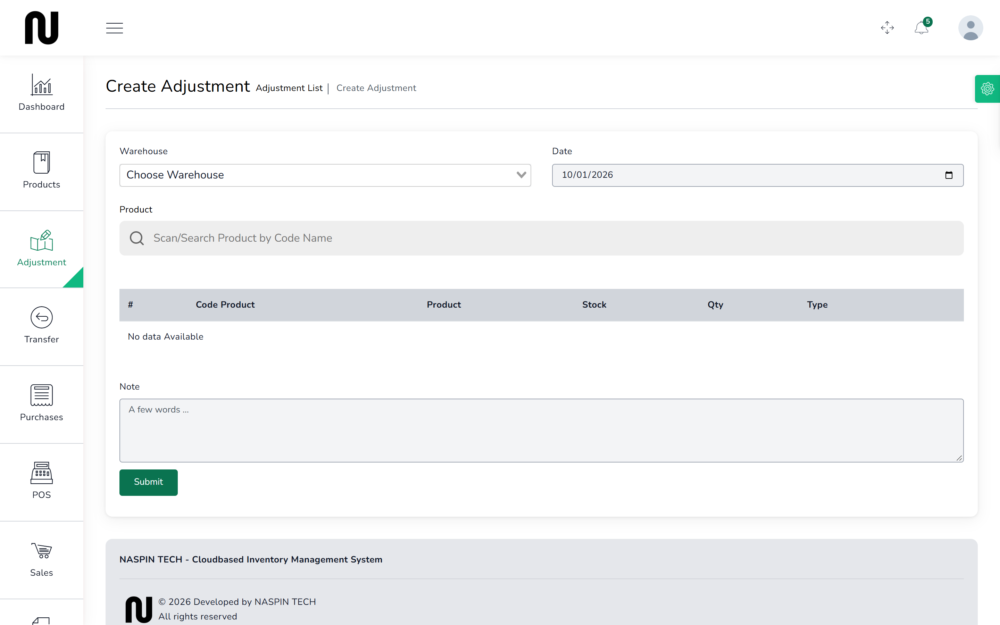
Choose the Warehouse the stock is in. Nothing can be added until you do — the product list is drawn from that warehouse.
Set the Date.
Find the product by name or code and press it to add a line. The Stock column shows what that warehouse currently holds.
Enter the Qty — how many are affected, not what should be left.
Set Type:
Type what happened in Note. "Rust damage found in the yard" is enough, and it is what somebody will read when they ask why the figure changed.
Press Submit. The adjustment gets a reference starting AD_.
The shelf changes immediately, and the movement is recorded against the adjustment reference — so anyone asking "why is this figure different?" can trace it back to this document and your note.
Written-off stock still cost the shop money. It does not come back as a refund from anyone, and it reduces what the stock on hand is worth. Regular write-offs of the same product are worth raising with whoever runs the shop — it usually means a storage problem rather than an accounting one.
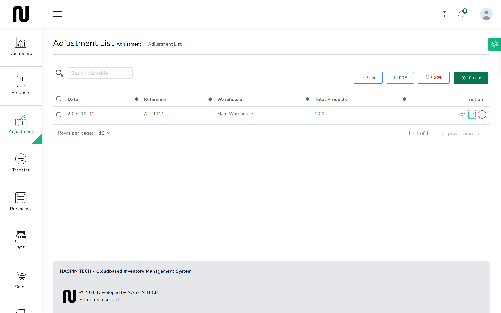
On a phone the screen stacks into one column and works the same way.
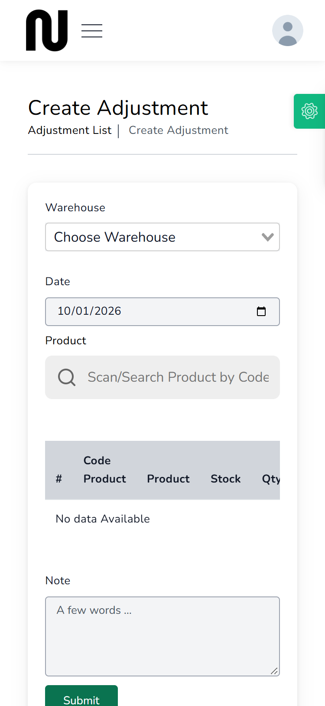
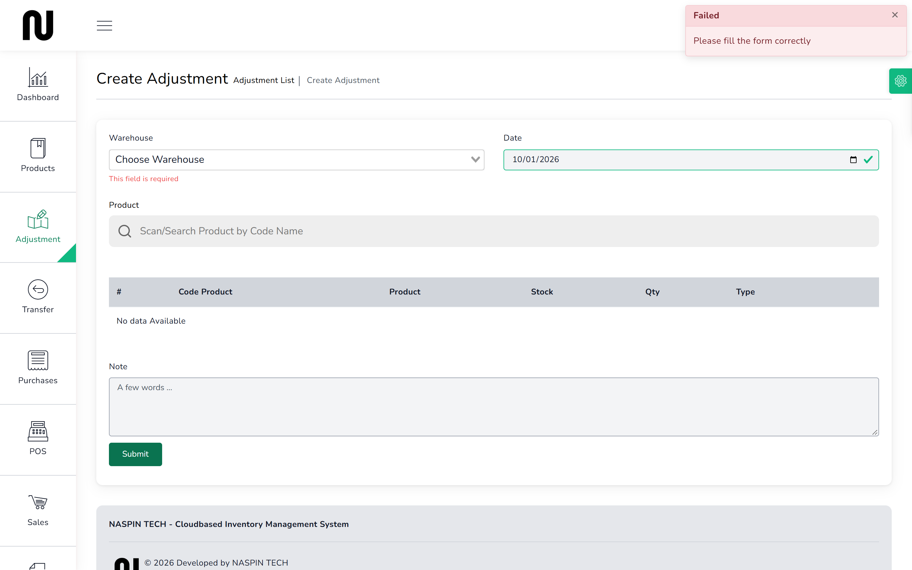
| You see | It means | Do this |
|---|---|---|
| This field is required | warehouse, quantity or type is blank | fill the highlighted boxes |
| nothing found when searching a product | no warehouse chosen, or that warehouse has no record of it | choose the warehouse first; then check the product exists |
| a quantity of 0 is refused | an adjustment of nothing is not an adjustment | enter the number actually affected |
| Insufficient stock for the selected product and warehouse. | you are subtracting more than the shelf holds | check the Stock column and enter no more than that |
A stock count is where you walk the shelves, write down what is actually there, and make the system agree with reality. It is the only thing that catches slow losses — miscounts at the counter, breakage nobody reported, short deliveries nobody noticed.
Before you start: pick a quiet time. Stock that moves during a count makes the figures argue with each other.
From the menu, choose Stock Counts, then start a new count.
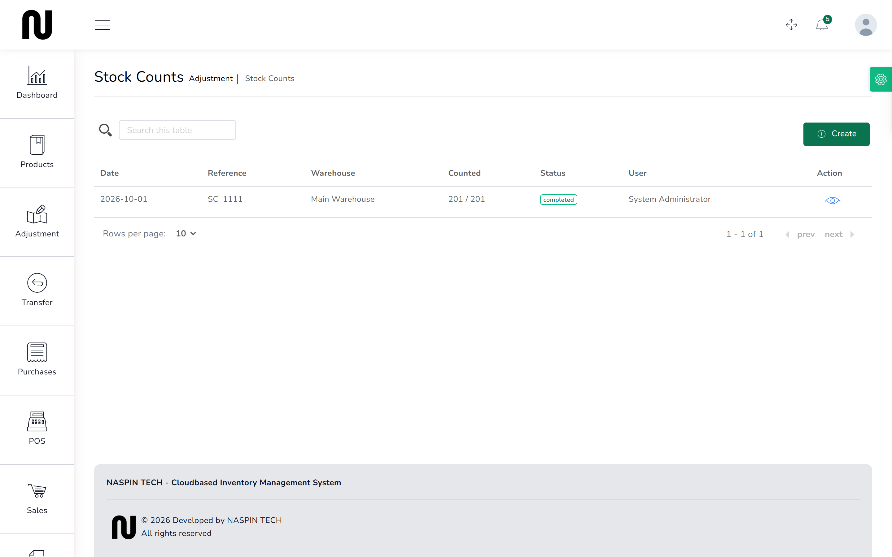
Choose the Warehouse you are counting and set the Date.
Optionally choose a Category to count one department at a time — fasteners today, paint tomorrow. A whole-shop count of 200 lines in one go rarely gets finished.
Submit to open the count. It is created as a draft, and a sheet is produced listing every product held at that warehouse with what the system believes is there.
Walk the shelves and enter what you actually count against each line. Nothing changes on the shelf while you do this — a draft count is just a list.
Save as you go. You can leave a draft and come back to it.
When the sheet is complete, complete the count. Every line where your figure differs is posted, and the shelf becomes what you counted.
The stock figures now match what you found. Each correction is recorded against the count reference, so the difference is traceable rather than appearing from nowhere.
Lines you counted correctly are left alone — only differences move.
A completed count cannot be edited or completed again. If you find you counted wrong, make an adjustment for the difference and say why. See Write off damage.
A count that finds nothing wrong across 200 lines is unusual. A few units out on fast-moving small items — nails by the kilo, screws by the box — is normal.
What is worth investigating is a large difference on a high-value line, or the same product coming up short every count. That is a pattern, not an accident.
| You see | It means | Do this |
|---|---|---|
| This field is required | warehouse or date is blank | fill the highlighted boxes |
| This count is {status} and can no longer be edited. | the count is finished or cancelled | start a new count, or make an adjustment for the difference |
| This count is already completed. | somebody completed it already | check the stock figures; the corrections have been posted |
| the sheet is missing products | the sheet only lists what that warehouse holds a record of | check the warehouse, and the category filter if you used one |
| the figures changed while counting | stock moved during the count | finish the count, then check for transfers or sales made in the meantime |
This is the screen to open before ringing a supplier. It lists what has run down, how far below its alert level it is, and roughly what restocking will cost.
From the menu, choose Reports, then Reorder Suggestions.
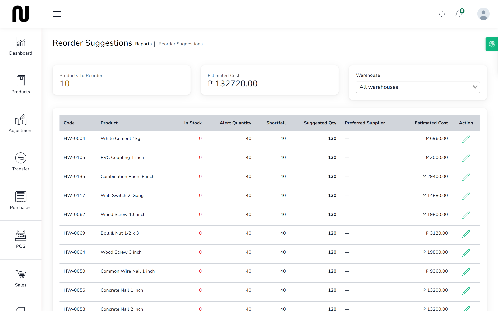
Use the Warehouse box to look at one branch, or leave it on all warehouses for the whole shop.
Read the two figures at the top:
Work down the table. For each line:
| Column | What it tells you |
|---|---|
| In Stock | what is on the shelf now, shown in red when it is zero |
| Alert Quantity | the level this product should not drop below |
| Shortfall | how far under that level it is |
| Suggested Qty | how much to order, based on the product's reorder quantity |
| Preferred Supplier | who normally supplies it, where that has been set |
Order what you need. See Order stock.
Nothing is dropped on a phone. All nine columns are still there — the table is wider than the screen, so you drag the table itself sideways to reach Suggested Qty and Preferred Supplier out to the right. The page behind it does not move; only the table does.
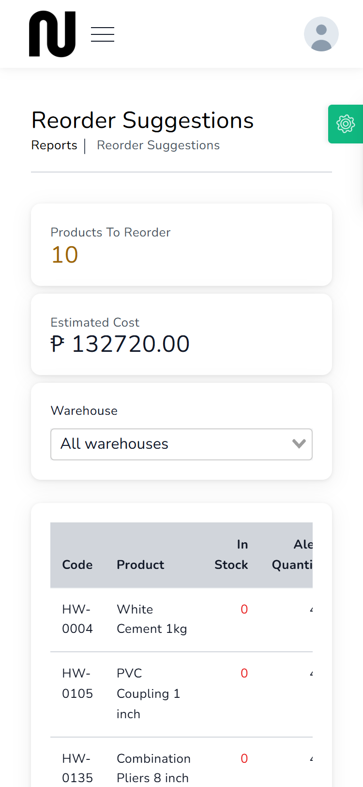
The two totals at the top sit above the table, so Products To Reorder and Estimated Cost are readable without any dragging.
Nothing on this screen changes stock. It is a list to act on, not a document.
Once goods are booked in, lines drop off as they come back above their alert level.
The suggestions are only as good as the levels set on each product:
All three are on the product's own record. See Add a product.
A product with its alert quantity left at 0 never appears here, however empty it gets. If something ran out and this screen never warned you, that is the first thing to check.
Reports → Product Quantity Alerts shows the same shortages per warehouse, which is more use when deciding whether to transfer stock between branches rather than buy more.
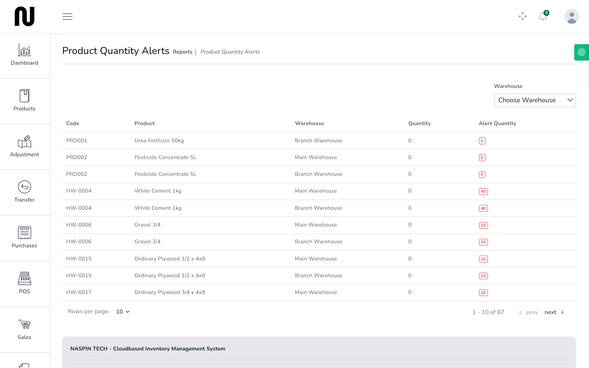
What the shop is holding, and what it cost. This is the figure for insurance, for the accountant, and for knowing how much money is sitting on the shelves rather than in the bank.
From the menu, choose Reports, then Stock Valuation.
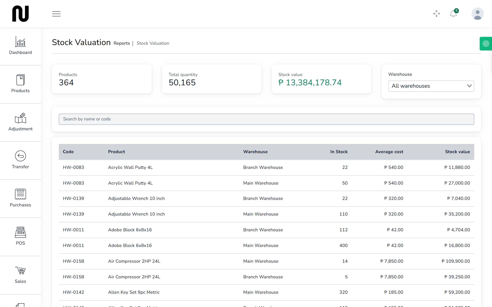
Read the three figures at the top:
Use the Warehouse box to see one branch on its own. Each branch is valued separately, which is what you need when they are insured separately or when you are deciding where stock should sit.
The table lists each product with its In Stock, Average cost and Stock value.
This is cost, not retail. It is what the shop paid, not what the shop would get. Valuing stock at selling price would book the profit before anyone has bought anything.
Average cost is the weighted average of everything you have bought. If you held 56 bags at ₱249.53 and then bought 120 at ₱252, the average becomes ₱250.44 — and that figure is what the next sale's margin is worked out against.
So the valuation moves when you buy, not only when you sell. A delivery at a higher price raises the value of the stock you already had.
Value concentrated in a few lines. Power tools and roofing sheets tie up far more money than nails. If cash is tight, that is where it is.
Stock that never moves. Cross this against Reports → Stock Movements: a line with a high value and no movements for months is money sitting still.
A branch holding more than it sells. Compare the two warehouses. Stock in the wrong place is as useless as no stock, and moving it costs less than buying more. See Move stock to the branch.
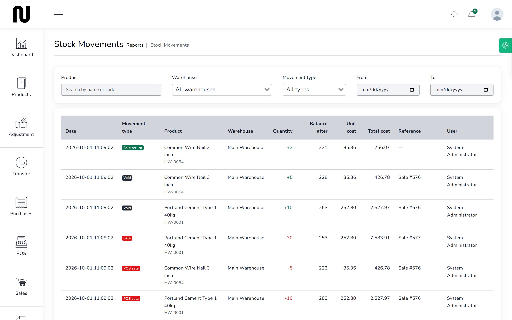
| Report | What it answers |
|---|---|
| Stock Movements | why a figure changed — every movement with the document behind it |
| Profit and Loss | what the shop made over a period |
| Sales Report | what sold, and for how much |
What was sold, what was in the drawer, and whether the two agree. This is the end-of-day check and the first place to look when cash is missing.
From the menu, choose Reports, then Till Sessions. Every shift is listed, newest first.
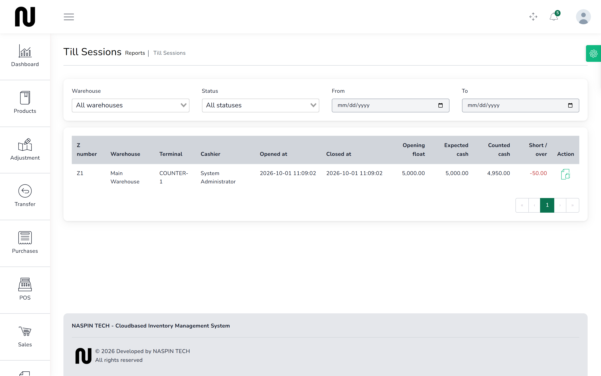
Each row is one shift: who opened it, which terminal, when it opened and closed, and the money.
Open a shift to see its full Z-reading.
| Line | What it means |
|---|---|
| Opening float | the cash the drawer started with |
| Cash sales | cash taken during the shift — not GCash or card |
| Cash in / Cash out | money added or removed without a sale |
| Expected cash | what should have been in the drawer |
| Counted cash | what the cashier actually counted |
| Short / over | the difference between the two |
It also carries the number of invoices, the first and last invoice numbers, the VAT split, and any voided sales.
The invoice range matters. The BIR expects an unbroken run of invoice numbers. A voided sale still appears in the range rather than leaving a gap, which is why cancelling a sale keeps the invoice. See Cancel a sale.
Short means less cash than expected; over means more. Both are recorded, not hidden.
The usual causes, in rough order of likelihood:
A drawer that balances to the centavo every single day deserves a second look rather than praise. It usually means somebody is typing the expected figure into Counted cash instead of counting the drawer.
| Report | What it answers |
|---|---|
| Sales Report | what sold, in what quantity, for how much |
| Profit and Loss | income less cost of goods and expenses, over a period |
| Payments Sale | what came in, split by payment method |
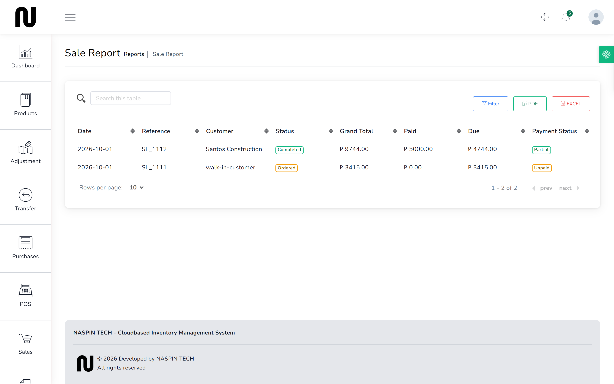
The Dashboard shows the headline figures for the current week without opening a report at all.
A new line arrives that the shop has never stocked. Putting it in the catalogue correctly now saves correcting every sale of it later.
Before you start: decide the code you will use. The shop's hardware lines run HW-0001 upward. Keep to a pattern — codes are what people scan and search by.
From the menu, choose Products, then Create Product.
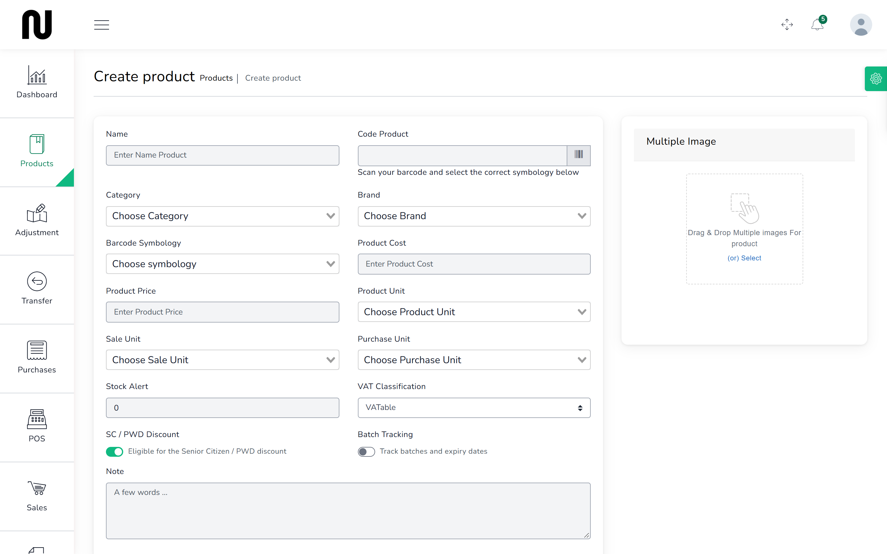
Enter the Name as a person at the counter would say it, including the size. "Portland Cement Type 1 40kg" is findable. "Cement" is not.
Enter the Code, or generate one.
Choose the Category and Brand. Categories are what the reports group by, so putting a line in the wrong one hides it.
Choose the Unit. This is how the item is sold — bag, sheet, length, kilogram, piece, roll. Getting it wrong makes every document about that product nonsense: cement by the piece, wire by the bag.
Enter the Cost — what the supplier charges you. This is the starting figure. It is recalculated as an average every time you book in a delivery.
Enter the Price — what the customer pays, including VAT.
Set the tax method so the price is treated as VAT-inclusive. This is the one to get right. Philippine retail prices are displayed with VAT already in them, so the label is what the customer pays and the VAT is worked back out of it. If the product is set up as VAT-exclusive instead, a ₱276 bag of cement rings up at ₱309 and the receipt is wrong.
Set the Stock Alert quantity — the level at which it should appear on the reorder list. Roughly what you sell between deliveries. Leaving it at 0 means it never warns you.
Press Submit.
The product appears in the catalogue and gets a stock record in every warehouse, starting at zero. It is immediately findable at the counter, though with nothing to sell until stock arrives.
To put stock on it, either book in a delivery (Order stock, then Book in a delivery) or, for opening stock you already have, make an Addition adjustment (Write off damage).
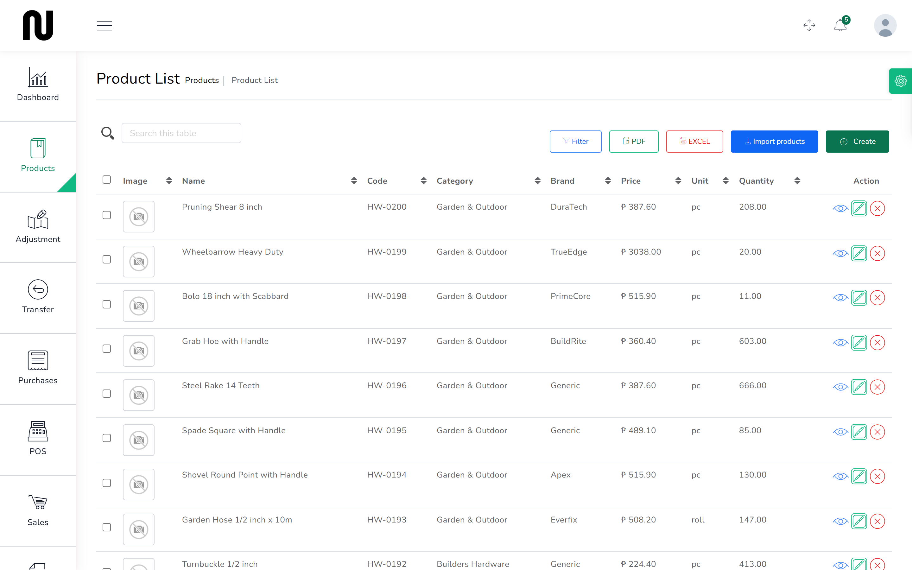
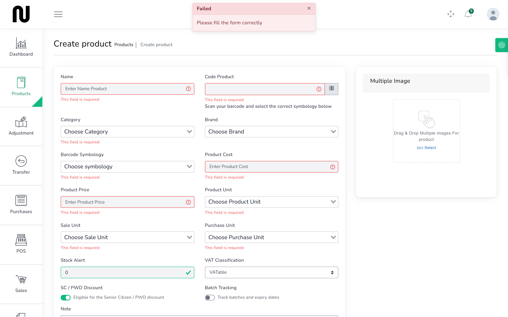
| You see | It means | Do this |
|---|---|---|
| Please fill the form correctly | the red box at the top of the screen, saying only that something is wrong | the boxes at fault are outlined in red further down, each with its own message |
| This field is required | a required box is blank | the highlighted boxes are name, code, category, unit, cost and price |
| This code already used. Generate Now | another product already has that code | use a different code, or press to generate one |
| the price at the counter is higher than you typed | the product is set VAT-exclusive | edit it and set the price as VAT-inclusive |
| it does not appear at the counter | the warehouse holds none of it yet | that is expected; stock it first |
Everyone who uses CIMS should have their own sign-in. Shared logins make the Z-reading useless: when a drawer is short, "who was on the till" has to have an answer.
Before you start: decide what this person should be able to reach. See Deciding what each person sees below.
From the menu, choose People, then Users.
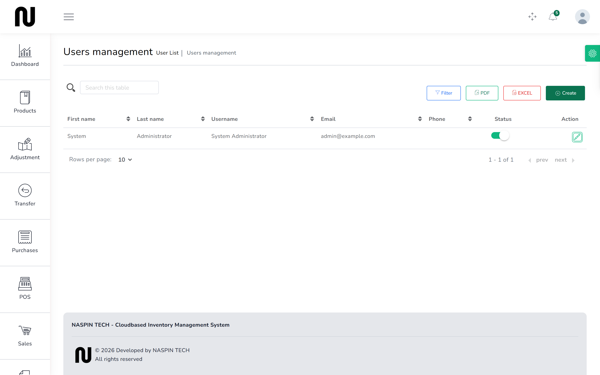
Press to create a user.
Enter their name, Username, Email and phone. The email is what they sign in with, so it must be one they can actually get to.
Set a password.
It must be at least 8 characters and contain an uppercase and a lowercase letter. Give it to them directly and have them change it — do not send it by text.
Choose their Role.
Choose the warehouses they work at, or mark them as covering all.
Press to save. They can sign in straight away.
The shop currently has one role, Owner, which can reach everything — the till, the stock, the cost prices, the reports and the settings.
That is fine for a shop run by one family. It is not fine once you have counter staff who should not see what the shop pays for cement.
CIMS controls this through roles. Settings → Permissions is where a role is created and what it can reach is ticked.
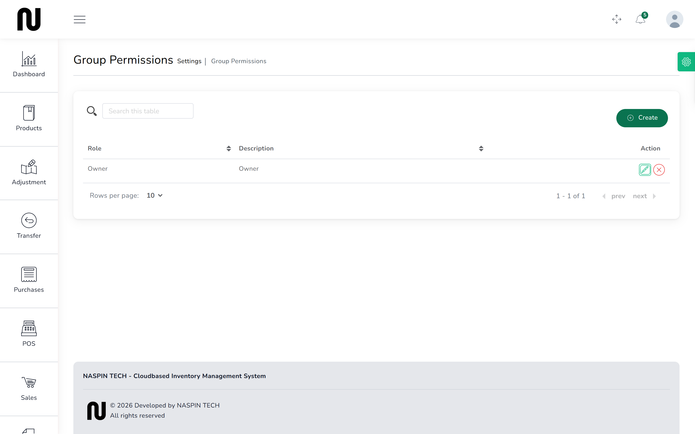
Two roles worth creating:
Cashier — the counter and nothing else. Can open a till, sell, hold baskets and close the drawer. Cannot see cost prices, cannot change products, cannot reach reports.
Stockman — purchases, goods receipts, transfers, adjustments and counts. Cannot sell and cannot reach the money reports.
This guide was written on a shop with only the Owner role, so what a restricted account actually looks like on screen is not shown here. Create the role, sign in as that person once, and check the menu shows only what you intended.
Their sign-ins are recorded, and anything they do carries their name — the sale, the adjustment, the approval, the drawer count.
To stop someone using CIMS, mark their account inactive rather than deleting it. Deleting an account that has documents against it would leave those documents with nobody's name on them.
| You see | It means | Do this |
|---|---|---|
| This Email already taken. | an account already uses that email | use another, or reactivate the existing account |
| It must be at least 8 characters. It needs an uppercase letter. It needs a lowercase letter. | the password is too weak | use a longer one with both cases |
| This field is required | a required box is blank | fill the highlighted boxes |
| they sign in but see nothing | their role has no permissions ticked | Settings → Permissions, and grant what the job needs |
Every message below was produced by actually causing the problem on a working shop. They are printed word for word as they appear on screen.
Find your message in the first column. Messages with {braces} fill in a real figure, name or date when you see them.
They are listed alphabetically, because you are looking at a message rather than thinking about which part of the system produced it.
| You see | It means | Do this |
|---|---|---|
| Choose Warehouse | you pressed Pay Now before choosing a warehouse at the counter | choose the warehouse in the second box down, then ring the sale up again |
| Everything on this order has been received, so there is nothing to close. | you tried to close an order short, but it is already complete | no action needed; check its status on the Purchases list |
| Insufficient stock for the selected product and warehouse. | this warehouse does not hold that many, even if another branch does | check the stock figure; reduce the quantity, sell from the other branch, or transfer stock in |
| It must be at least 8 characters. It needs an uppercase letter. It needs a lowercase letter. | the password for a staff account is too weak | use a longer password with both upper and lower case |
| Only {amount} is still due on this sale. | you are taking more than the invoice balance | enter the outstanding amount; if the customer is paying more, the rest is a payment on another invoice |
| Only {amount} is still owed on this purchase. | you are paying a supplier more than the balance | enter the outstanding amount |
| Open the till before selling. No drawer is open for you at this warehouse. | there is no open drawer for you here | see Open the till |
| The reset email could not be sent. Check the SMTP settings under Settings, then System Settings. | the shop's outgoing mail is not set up, so no reset email can leave | see A reset email that never arrives below |
| Please fill the form correctly | something on the form is wrong or missing, and this message does not say what | scroll the form; the boxes at fault are outlined in red with their own message underneath |
| That sale has already been voided. | somebody voided this invoice already | check the status on the Sales list; no further action is needed |
| That sale was not made today. Use a sale return instead. | voiding only applies to the current day | handle it as a sale return |
| That shift has already been counted down. Use a sale return instead. | the drawer was closed after the sale | the drawer is settled; handle it as a return instead |
| The amount paid cannot be more than the order total of {amount}. | the tendered figure is above the sale total | put what the customer owes in Paying Amount, and what they handed over in Received Amount |
| This count is already completed. | the stock count is finished | corrections have been posted; make an adjustment if you need to change something |
| This count is {status} and can no longer be edited. | the count is finished or cancelled | start a new count, or make an adjustment |
| This drawer already has a session open. Close it before opening another. | this terminal already has an open drawer | press the amount at the top left to see it, and close it first |
| This Email already taken. | a staff account already uses that email | use a different email, or reactivate the existing account |
| This code already used. Generate Now | another product has that code | use a different code, or press to generate one |
| This field is required | a box that must be filled is empty | the box is outlined in red; fill it and submit again |
| This order was already closed short on {date}. | somebody closed this order short already | check the Purchases list for the reason recorded |
| This order was closed short on {date} ({reason}). Raise a new order for anything that still arrives. | the goods turned up after the order was closed | raise a new order for what arrived; the closed one stays closed |
| This purchase is awaiting approval and cannot be received yet. | the order has not been signed off | see Approve an order |
| This purchase is not awaiting approval (it is {status}). | it has already been approved or rejected | no action needed |
| This purchase was rejected and cannot be received. | the order was turned down | raise a new order if the goods are genuinely wanted |
| This sale is already paid in full. | the invoice has nothing outstanding | check the Sales list; no payment is due |
| This sale would take {customer} to {amount}, over their credit limit of {limit}. Take a payment, or raise the limit on the customer record. | a credit customer has reached their limit | take a payment on their account, or raise the limit on their record |
| We can't find a user with that e-mail address. | you asked for a password reset for an address that has no account | check the spelling; if it is right, that person has no CIMS account yet |
Forgot Password ? on the sign-in screen cannot send anything yet. The shop's outgoing mail settings are still the demonstration ones that came with the system, so the message has nowhere to go. This is what you get instead, at the top of the screen:
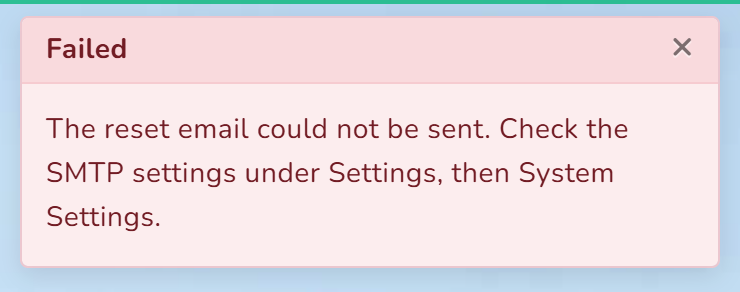
It takes up to half a minute to appear, because the system waits for the mail server to answer before giving up. The screen looks stuck in the meantime. Press once and wait.
Do not wait for an email. Ask whoever looks after the shop's accounts to set you a new password — see Add a staff account.
Making it work is a job for whoever set CIMS up: the outgoing mail server, port and sign-in go in Settings → System Settings, under SMTP Configuration. Two things to know before relying on it:
The reset link in the email is built from the address CIMS publishes itself at, which is currently the counter PC's own address. A link opened on a phone will not work. That address has to change before reset emails are useful away from the counter.
Anyone who can reach the sign-in screen can find out whether an email address has an account, because the screen answers this when it does not:
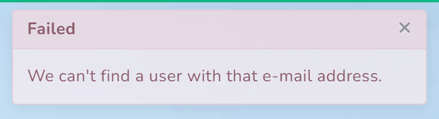
That is a different message from the one above, and the difference tells an outsider which addresses belong to staff. Worth raising with whoever maintains CIMS.
A screen sits blank for a few seconds. Reports and the counter product grid take about three to six seconds to fill. There is no message while they load, so a slow screen looks the same as a stuck one. Wait before pressing again — pressing twice can raise two documents.
A purchase order stays open after the delivery arrived. If anything was rejected or short, the order is genuinely not complete. See Close a short order.
A voided sale is still on the list. That is deliberate. The invoice and its number stay, so the run of invoice numbers is unbroken for the BIR.
A held basket did not reserve the stock. Holding parks the basket; it does not take the goods off the shelf. If the stock sells meanwhile, you are told when you take payment.
The product is in the catalogue but not at the counter. The counter only shows what that warehouse holds. Check the warehouse box, and whether the product has any stock yet.
Note three things before asking for help:
A reference lets anyone find the exact record. Without it, the first ten minutes go on working out which one you meant.
Only words that appear on screen and are not obvious from where they appear. Everything else is explained on the page where it is used.
Adjustment — Taking stock off the shelf, or putting it on, without a sale or a delivery. Used for damage, loss, or correcting a mistake. References start AD_.
Average cost — What a product has cost the shop on average, weighted across everything bought. It changes when you book in a delivery at a different price, and it is what every margin and stock valuation is worked out against. Not the shelf price.
Expected cash — What should be in the drawer: the opening float, plus cash sales, plus Cash in, less Cash out, less cash refunds.
Float — The cash a drawer starts the shift with, so there is change available before anything is sold.
Goods receipt — The record of a delivery actually arriving and being accepted. Separate from the purchase order, because what arrives is often not what was ordered. References start GRN_.
Purchase order — What you asked a supplier to send. It changes no stock on its own. References start PR_.
Reorder quantity — How much to buy when a product runs low. Used to work out Suggested Qty on the reorder screen.
Short-closed — A purchase order deliberately finished with part of it never delivered, because the balance is not coming. Keeps it out of the list of goods still expected.
Stock alert quantity — The level a product should not drop below. When it does, the product appears on the reorder and alert screens. A product left at 0 never appears, however empty it gets.
Terminal — The name of a counter. A shop with two tills gives each one a name so the two drawers can be told apart.
Till session — One shift on one drawer: opened with a float, closed with a count. Everything sold in between belongs to it.
Transfer — Moving stock between Main Warehouse and Branch Warehouse. References start TR_.
VAT-inclusive — The price already contains the 12% VAT, so the figure on the shelf is what the customer pays. The VAT is worked back out of it on the receipt. This is how Philippine retail prices are shown.
Void — Cancelling a sale made today, on the current shift. The stock goes back, the money comes off the drawer, and the invoice is kept and marked voided rather than deleted.
Z-reading — The end-of-day record for a drawer: float, cash counted, the difference, the invoice range, the VAT split and any voids. Produced when the till is closed and not editable afterwards.
This list is short on purpose. A long glossary usually means the screens are using words the people operating them would not — which is a problem with the product rather than the guide. The entries above are the ones that genuinely could not be made obvious in place.